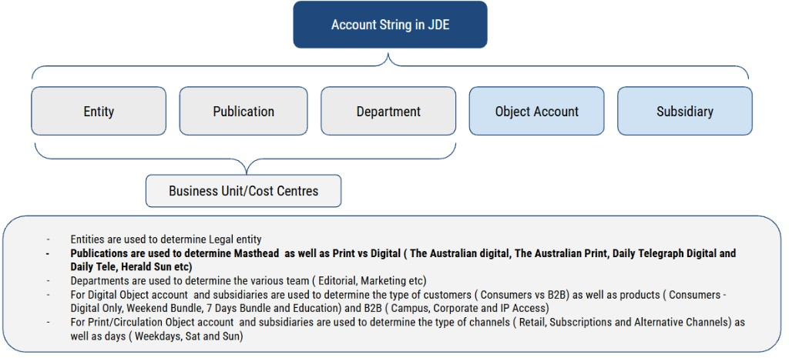
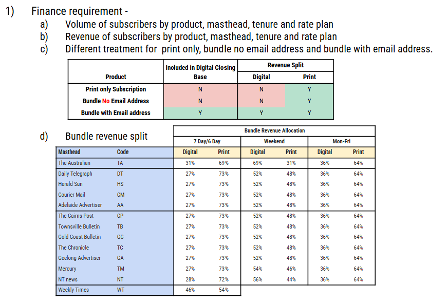

In one sentence
Each run works out how much of the cash collected is earned up to a chosen date, then posts only the part that earlier runs have not already posted.
When the job runs every week, that remainder is last week's earned revenue. The cash it looks at is not limited to last week. Payments are included from a long-standing start date (the script's commented value is 30 June 2014) up to the earned date. "Last week" is produced by subtracting what was posted before.
The flow
Pay-as-you-go and contract split at the offering, then do the same three things: earned-to-date, a cash cap, then only the new movement. The print/digital split is not a box in this picture. The same stage of each chain may run together. Down a chain, the order is fixed.
flowchart TD
prior["Step before this script\nInsert one row per order item and product code\ninto news_earned_revenue for this earned date"]
split{"contract_offer set?"}
p1["2b Straight line\npositive ex-GST cash times days over the term\nround to an integer"]
c1["2c From the due date\neach positive instalment\nsum, then round once"]
p2["3 Cap at net cash\nonly when earned-to-date is higher\nrefunds included"]
c2["3c Cap at net cash\ncurrent code plus previous code"]
p3["4 This week\nearned-to-date minus earlier dates\nmay be negative"]
c3["4c This week\nincludes the previous code\nnegative stored as 0"]
p4["5 Drop the worklist row\nwhen this code has caught the cash"]
c4["5c Drop the order item\nwhen all codes have caught the cash"]
file["Sum this earned date by product code\nwrite the file"]
prior -->|2b and 2c only update that row| split
split -->|No| p1
split -->|Yes| c1
p1 --> p2 --> p3 --> p4 --> file
c1 --> c2 --> c3 --> c4 --> file
classDef outside fill:#f6f1e6,stroke:#8a7340,color:#2c2416
class prior outside
The tinted box is that insert. It is not one of the eight procedures, which is why their names start at 2b. The file writer is not in the script either. Steps 5 and 5c do not change the amount that goes to the file.
Eight procedures, and the order they run
The script defines eight procedures and does not call them. There is no orchestrator in the file. The order below is the order they are written in the script, and it is also the order their inputs and outputs require. Pay-as-you-go and contract are separate chains. A step in one chain does not read the other chain. Down a chain, the order is fixed.
PAYG chain
Before this script: insert this earned date's rows into news_earned_revenue. That procedure is not in the file. The names start at 2b.
-
1. news_earned_revenue_2b_update
Set
earned_amountto earned-to-date: positive ex-GST cash spread evenly from the subscription start date through the expire date. - 2. news_earned_revenue_3_update If that amount is above net cash, including refunds, cut it down to net cash.
- 3. news_earned_revenue_4_update Replace the amount with this run's movement: earned-to-date minus everything posted on earlier earned dates. A refund can make this negative.
- 4. news_currently_earning_5_delete Remove the worklist row when lifetime earned equals net cash since the historical start date.
Contract chain
Same missing insert. Contract rows are the ones whose offering has contract_offer set and status Active.
-
1. news_earned_revenue_2c_update
Set
earned_amountto earned-to-date: each positive payment earned from its instalment due date, summed, then rounded. - 2. news_earned_revenue_3c_update Cap at net cash on the current product code and, via the mapping, the previous product code.
- 3. news_earned_revenue_4c_update Movement since earlier earned dates, including amounts posted on the previous product code. If the result is negative, store 0.
- 4. news_currently_earning_5c_delete Remove the order item from the worklist when total earned, all product codes, equals total net cash.
After both chains: sum this earned date by product code and write the SOF / EOF file. That step is also not in the script.
2b and 2c may run together. So may 3 and 3c, 4 and 4c, and 5 and 5c. 3 must wait for 2b. 4 must wait for 3. 5 must wait for 4. The contract chain is the same: 2c, then 3c, then 4c, then 5c. Running the file from top to bottom (2b, 2c, 3, 3c, 4, 4c, 5, 5c) satisfies both chains.
Each procedure, step by step
Every procedure below writes one number, or deletes a worklist row. It does not create the subscriber and it does not split print from digital. The numbers in the examples are made up so the arithmetic can be checked. They are not a live subscriber.
Two dates are handed in. The earned date is the day being closed, such as Sunday 25 October 2026. The historical start is the commented value 30 June 2014. Payments timestamped on that start date are left out of the earning steps. Payments on the earned date are included.
PAYG 1. Spread the cash — news_earned_revenue_2b_update
Asks for the earned date and the historical start. Overwrites today’s earned-to-date for pay-as-you-go.
A row is included only when all of these are true:
- The offering has no contract, and the offering is Active.
- The subscription start date is on or before the earned date.
- This product code has at least one payment whose gross amount is positive, timestamped after the historical start and on or before the earned date.
- Add up ex-GST on those positive payments only. A refund has a negative or zero gross amount, so it is ignored here.
- Days so far = earned date − subscription start + 1. Both ends count.
- Days in the term = expire date − subscription start + 1.
- Earned to date = round(positive ex-GST × days so far ÷ days in the term). If that cannot be calculated, write 0.
- Store that number on today’s row for this order line and this product code. Whatever was there before is replaced.
Term 1 October through 7 October. That is 7 days. Positive cash is 100. On 3 October, days so far are 3. Round(100 × 3/7) = 43. Today’s row becomes 43.
After the expire date the fraction can go above 100%. The next procedure pulls it back.
PAYG 2. Do not earn more than the cash — news_earned_revenue_3_update
Same two dates. This is the step that sees refunds.
- For the same order line and product code, add ex-GST of every payment in the window, refunds included. This net can be lower than the positive cash used in step 1.
- Compare today’s earned-to-date with that net.
- If earned-to-date is already less than or equal to the net, leave it alone.
- If earned-to-date is higher, replace it with the net.
Continue the example. Earned-to-date is 43 and net cash is still 100. 43 is not higher, so the row stays 43.
Now suppose 30 has been refunded. Net cash is 70. If the straight-line has reached 100, this procedure cuts the row from 100 down to 70. It never raises a number.
PAYG 3. Keep only this week — news_earned_revenue_4_update
Asks for the earned date only. This is the number that belongs in the weekly file.
- Start from the number now sitting on today’s row. That is the capped earned-to-date from the previous two procedures.
- Add up
earned_amounton every earlier earned date for the same order line and the same product code. - Today’s row becomes: capped earned-to-date − that earlier total.
First week of the example: 43 − 0 = 43. The file would carry 43 for this product code, added together with every other subscriber on that code.
Next run, on 7 October, step 1 writes round(100 × 7/7) = 100, the cap leaves 100, and this procedure writes 100 − 43 = 57.
A refund can make the result negative. If earlier weeks already posted 90 and the cap has cut earned-to-date to 70, this week is 70 − 90 = −20. Pay-as-you-go stores the −20. That is a reversal.
PAYG 4. Drop a finished code from the worklist — news_currently_earning_5_delete
Asks for the historical start only. It does not change the amount that goes to the file.
- Add up every earned amount ever stored for this order line and this product code. All earned dates, not only this week.
- Add up net ex-GST cash for that same code, where the payment timestamp is on or after the historical start.
- If those two totals are equal, delete the worklist row.
- If they differ, leave the worklist row. The subscription is still being earned.
In the example, after the term, earned amounts add up to 100 and net cash is 100. The worklist row for that product code is removed. After the 30 refund, earned-to-date was cut to 70. The worklist row stays until the posted total also equals 70.
One difference from the earning steps: a payment timestamped on the historical start date is counted here, and it was excluded from the spread and the cap.
Contract 1. Earn each instalment from its due date — news_earned_revenue_2c_update
Asks for the earned date and the historical start. Overwrites today’s earned-to-date for contracts.
A row is included only when the offering is an Active contract, and this product code has at least one positive payment in the window. If this row is an old product code, and the new code already has a positive payment, the old row is skipped so the same cash is not earned twice.
- Take each positive payment on this product code. If this row is the new code, also take positive payments still sitting on the previous code.
- Find the due date. Use the instalment with the same payment sequence. If that is missing, use the latest instalment that has any payment. If that is also missing, use the subscription start date.
- Days earned = earned date − due date + 1. If that is negative, the instalment is still in the future and contributes 0.
- If days earned have reached the instalment length, the whole ex-GST payment is earned. Otherwise it contributes payment × days earned ÷ instalment length.
- Add every instalment, then round once. Store that on today’s row.
How long an instalment is:
| Package | Length used for each payment |
|---|---|
| Measured in months | The number of days in the month of the due date: 28, 29, 30, or 31. |
| A year billed in 12 instalments | The same month length, the days in the due date’s month. |
| Measured in days | The package length in days, divided by the number of instalments, then rounded. |
| Measured in weeks | Seven times the number of weeks, divided by the number of instalments, then rounded. |
| Other yearly lengths | Days from the day the job runs until the same date that many years later, divided by the number of instalments, then rounded. It uses today’s date, not the subscriber’s own year. |
One instalment of 31 is due on 1 October, and October has 31 days. On 1 October, days earned are 1, so the fraction is 1/31 and the rounded result is 1. On 15 October the fraction is 15/31, which is 15 before rounding. On 31 October the whole 31 is earned. On 30 September the due date is still ahead, so this instalment contributes 0.
Two instalments are added before the round. If one has earned 15.4 and another has earned 10.4, the job rounds 25.8 once, to 26. It does not round each instalment and then add.
Contract 2. Do not earn more than the cash — news_earned_revenue_3c_update
Same idea as the pay-as-you-go cap. The ceiling is wider when the product code has changed.
- Add net ex-GST in the window for this product code, refunds included.
- If this row is the new code, add the net cash still on the previous code as well.
- If today’s earned-to-date is above that combined net, replace it with the combined net.
- If it is not above the net, leave it.
The 1 October example has earned-to-date of 1 and cash of 31. The cap does nothing. If a refund later makes net cash 0 while earned-to-date is still 31, the row is cut to 0.
Contract 3. Keep only this week — news_earned_revenue_4c_update
Asks for the earned date only. Same subtraction as pay-as-you-go, with two contract rules.
- Start from today’s capped earned-to-date.
- Subtract earned amounts already stored on earlier dates for this product code.
- Also subtract earlier amounts stored on the previous product code, when this row is the new code.
- If the result is negative, store 0. A pay-as-you-go row would have kept the negative.
On 1 October the row is 1 − 0 = 1. On 31 October, earned-to-date is 31 and the earlier date holds 1, so this week is 30.
If those 31 were already posted and a refund then caps earned-to-date at 0, the subtraction is 0 − 31 = −31. The procedure stores 0. The reversal does not go to the file.
Contract 4. Drop a finished order line from the worklist — news_currently_earning_5c_delete
Takes no dates. The comment says expired or cancelled. The test is whether the money has caught up.
- Add up earned amounts for the whole order line, across every product code and every earned date.
- Add up net ex-GST cash for that order line, again across every product code. There is no historical-start cutoff.
- If the two totals are equal, delete every worklist row for that order line.
- If they differ, leave the worklist rows.
Unlike pay-as-you-go, one product code catching up is not enough. All of the codes on the order line are compared together. This delete does not change the weekly amount.
Two kinds of subscription
The split is on the offering, not on a flag in the calculation itself.
No contract on the offering
news_offering.contract_offer is empty, and the offering is Active. Procedures 2b, 3, 4, 5.
Think of a term that was paid up front, or as you go, without an instalment contract.
Offering is a contract
contract_offer is set, and the offering is Active. Procedures 2c, 3c, 4c, 5c.
Each payment belongs to an instalment with its own due date.
Only Active offerings are included. A subscription whose package is no longer Active is skipped by these updates.
PAYG — the same example across a week
Procedures 2b, 3, and 4 in one table. Positive payments only go into the spread. Refunds wait for the cap. Both ends of the term count as a day.
Days so far = earned date − start date + 1. Days in the term = expire date − start date + 1. After the expire date the fraction can go above 100%. The cap then pulls it back to the cash collected.
Illustration — not a live subscriber
Term 1 October through 7 October. That is 7 days. The customer paid 100 ex-GST. There is no refund yet.
| Earned date | Days so far | Earned to date | Already posted | This run posts |
|---|---|---|---|---|
| 2 October | 2 | round(100 × 2/7) = 29 | 0 | 29 |
| 3 October | 3 | round(100 × 3/7) = 43 | 29 | 14 |
| 7 October | 7 | 100 | prior sum | whatever is left to reach 100 |
The weekly number is the new cumulative minus the old cumulative. Rounding is done on the cumulative each time, so the pieces add back to the cash.
A refund
Suppose 100 was paid and 30 was refunded. Net cash is 70. At the end of the term the straight-line of the original 100 is still 100, and the cap cuts earned-to-date to 70. If earlier weeks already posted 90, this week posts 70 − 90 = −20. PAYG is allowed to post that negative. That is a reversal.
Contract — the same rules in one place
This is procedure 2c again, without the surrounding steps. Each positive payment is earned on its own, starting on the instalment due date.
- If the due date is still in the future, this instalment contributes 0.
- If days earned have reached the instalment length, the whole ex-GST payment is earned.
- Otherwise the payment contributes days earned ÷ instalment length.
Add the instalments together, then round once.
The due date comes from the contract instalment tied to that payment. If that row is missing, the job uses the latest instalment that has any payment. If that is also missing, it uses the subscription start date.
How long is an instalment?
The package calendar unit comes from Think: 0 = days, 1 = weeks, 2 = months, 3 = years. The length actually used on each payment is the one in procedure 2c. A package measured in months always uses the days in the due date’s month, even when the package covers more than one month.
Illustration
An instalment of 31 ex-GST is due on 1 October, and October has 31 days. On 1 October, one day is earned: round(31 × 1/31) = 1, if it were the only instalment. On 31 October the whole 31 is earned. On 30 September nothing from this instalment is earned yet.
When the product code changes
Contracts keep a map from the current product code to the previous one (news_earned_revenue_pac_mapping). Cash and earlier earnings on the old code are pulled into the new code. The old-code row is skipped when the new code already has a payment, so the same cash is not earned twice.
The file JDE receives
The sample is named PCEarnRevWk_ plus a timestamp. Shape:
Every data row in that sample is earned date 25 October 2026, a Sunday. The file timestamp is Monday 26 October 2026 at 06:00:00.240. That is one file, so it shows the pattern rather than proving the standing schedule. Some amounts in the sample are negative, which matches the PAYG reversal path. The file has no subscriber id, order id, tenure, or rate plan.
The 4-character code is the JDE product code
Codes such as ANAD and CMCW are product codes. They are mapped to the JDE account string. The weekly procedures do not build that account string. They total the week's movement by the product code and stop there.
The account string has five segments. The first three are the business unit / cost centre.
| Segment | What it decides |
|---|---|
| Entity | Legal entity |
| Publication | Masthead, and print versus digital (for example The Australian digital, The Australian print, Daily Telegraph, Herald Sun) |
| Department | Team, such as editorial or marketing |
| Object account and subsidiary — digital | Consumer versus B2B, and the product: digital only, weekend bundle, 7-day bundle, education, campus, corporate, IP access |
| Object account and subsidiary — print | Channel (retail, subscriptions, alternative) and days (weekday, Saturday, Sunday) |

The table that turns CMCW into those five segments was not in the procedures, the sample file, or the Think data model. The letters are defined in news_allocate_to.
How to read the 4-character code
news_allocate_to.
559 codes. All are marked active. 486 are marked earned. 73 are marked not earned. Every code on the 26 Oct 2026 weekly file is in the list and is marked earned.
A code is brand, then product. CMCW is Courier Mail, PAYG, bundle, print, weekend. The letters name the bucket. They do not calculate the percent. Two packages can both use CB / CS at different rates.
| Characters | Role | In CMCW |
|---|---|---|
| 1–2 | Brand. Masthead papers, plus digital brands such as Code Sports and Fox Sports | CM Courier Mail |
| 3–4 | Product. Pay-as-you-go or contract, education or not, digital or print, and the day pattern | CW PAYG bundle, print, weekend |
Masthead, characters 1–2
| Code | Masthead | Code on the finance sheet |
|---|---|---|
| HS | Herald Sun | HS |
| DT | Daily Telegraph | DT |
| CM | Courier Mail | CM |
| GA | Geelong Advertiser | GA |
| GC | Gold Coast Bulletin | GC |
| CP | Cairns Post | CP |
| TB | Townsville Bulletin | TB |
| TC | The Chronicle | TC |
| TM | Mercury | TM |
| NT | NT News | NT |
| WT | Weekly Times | WT |
| AN | The Advertiser / Adelaide Now | AA on the sheet. Packages are prefixed AA_. |
| AU | The Australian | TA on the sheet. Packages are prefixed TA_. |
| PN, CS, PU, RN, SC, SN | Perth Now, Code Sports, Punters, Racenet, Supercoach, Sky News | Not on the finance sheet. Mostly digital products. |
| FS | Fox Sports | FSD1 to FSD5 are Fox Sports revenue from Advertiser, Courier Mail, Telegraph, Herald Sun, and Perth Now sales. Those five are marked not earned. |
Product, characters 3–4
The same pairs are used on each masthead paper. C is pay-as-you-go bundle. X is contract bundle. Education has its own pairs. Within a bundle pair, B or D is digital and S or W is print. D and W are the weekend pair. B and S are 7-day and other.
| Suffix | What the note says | Earned |
|---|---|---|
| CB / CS | PAYG bundle, digital then print, 7-day and other | Yes |
| CD / CW | PAYG bundle, digital then print, weekend | Yes |
| XB / XS | Contract bundle, digital then print, 7-day and other | Yes |
| XD / XW | Contract bundle, digital then print, weekend | Yes |
| BB / BS, BD / BW | PAYG education bundle. Same digital/print split, 7-day then weekend | Yes |
| YB / YS, YD / YW | Contract education bundle. Same shape | Yes |
| AD, AS / AW | PAYG education, not a bundle: digital only, print 7-day, print weekend | Yes |
| ZD, ZS / ZW | Contract education, not a bundle: digital only, print 7-day, print weekend | Yes |
| DS / DW | PAYG print only, 7-day and other / weekend | Yes |
| WD, WS / WW | Contract: digital only, print 7-day, print weekend | Yes |
| DD | {brand} Digital. A digital-only product, not one side of the bundle split | Yes, except Tips and FSDD |
| DC, CP, IP, SM | Corporate digital, digital campus (B2B), digital IP (B2B), digital SMB (B2B) | Yes |
| PT, ET | Print top-up, early termination fee | Yes |
| PP, PC, OP, VI, RW | Print, corporate print, other product, value item, rewards | No |
DD / PT is not the finance pair.
An earlier reading of the allocation rows treated DD as the digital share and PT as the print share. The notes say DD is "{brand} Digital" and PT is print top-up. On current packages those two suffixes are paired 9 times. The pairs that carry the finance-like rates are CB/CS and CD/CW.
The print / digital split is not inside this script
Finance attributes one revenue amount. The two shares add to 100%. The weekly procedures do not apply this rule. They earn the amount already stored on each product code above.
- Classify the product. Print only, bundle with no email address, or bundle with an email address.
- Print only, and bundle with no email, stop here. They stay out of the digital closing base. Revenue is 100% print and 0% digital. Email is the gate. A bundle without an email is treated as print only.
- A bundle with an email is in the digital closing base. Look up masthead and delivery pattern. Seven-day and six-day are one column. Monday–Friday is 36% digital / 64% print for every masthead that has the column. Weekend moves the digital share up to about half, or more. The Australian weekend pair is its 7-day pair swapped, 69% digital / 31% print. Weekly Times has only the 7-day / 6-day column, 46% / 54%.
Nine mastheads share one schedule: Daily Telegraph, Herald Sun, Courier Mail, Adelaide Advertiser, Cairns Post, Townsville Bulletin, Gold Coast Bulletin, The Chronicle, and Geelong Advertiser. 7-day / 6-day is 27% digital / 73% print. Weekend is 52% / 48%. Monday–Friday is 36% / 64%. Mercury, NT News, The Australian, and Weekly Times differ, as in the table.
Tenure and rate plan are not inputs to the percentage. They are reporting cuts for subscriber counts and for revenue. The percentage uses product type, masthead, and delivery pattern.
| Masthead | Code | 7 day / 6 day digital | Weekend digital | Mon–Fri digital | |||
|---|---|---|---|---|---|---|---|
| The Australian | TA | 31% | 69% | 69% | 31% | 36% | 64% |
| Daily Telegraph | DT | 27% | 73% | 52% | 48% | 36% | 64% |
| Herald Sun | HS | 27% | 73% | 52% | 48% | 36% | 64% |
| Courier Mail | CM | 27% | 73% | 52% | 48% | 36% | 64% |
| Adelaide Advertiser | AA | 27% | 73% | 52% | 48% | 36% | 64% |
| The Cairns Post | CP | 27% | 73% | 52% | 48% | 36% | 64% |
| Townsville Bulletin | TB | 27% | 73% | 52% | 48% | 36% | 64% |
| Gold Coast Bulletin | GC | 27% | 73% | 52% | 48% | 36% | 64% |
| The Chronicle | TC | 27% | 73% | 52% | 48% | 36% | 64% |
| Geelong Advertiser | GA | 27% | 73% | 52% | 48% | 36% | 64% |
| Mercury | TM | 27% | 73% | 54% | 46% | 36% | 64% |
| NT News | NT | 28% | 72% | 56% | 44% | 36% | 64% |
| Weekly Times | WT | 46% | 54% | — | — | — | — |

The link is pkg_def to news_pkg_def_allocation (pkg_def_id, effective date, allocation_id), keeping the latest effective date for that package. news_allocation is the header (description and status). news_allocation_detail is the lines (product code and percent). news_allocate_to is the code list above. The script names the detail table once, inside a comment in news_earned_revenue_3c_update. No procedure selects it.
Of 11,018 packages, 10,283 have a current allocation and 735 do not. Registration, staff access, trials, and free passes are among those with none. The 10,283 packages share 630 allocation ids. 10,212 of the links are Active and 71 are Inactive. 5,284 current allocations are one product code, 4,873 are two, and 126 are three.
The rates on those current packages are close to the finance sheet and are not the sheet's whole numbers. The largest groups are CD 51.85 / CW 48.15 and CB 26.92 / CS 73.08. The Australian weekend digital pass is AUCD 68.965517% and AUCW 31.034483% (allocation 2370, effective 1 Jul 2025), against the sheet's 69 / 31. The Australian 6-day pass is AUCB 31.25% and AUCS 68.75%. Weekend plus Monday uses the same CB / CS suffixes at 55.555556 / 44.444444, and that pattern is not a column on the sheet.
The query keeps the latest effective date only. It does not say which older allocation a package used before that date. That is the gap the procedure comment already named. One order line can carry several product codes, so a split already written onto those codes passes through this job without the job seeing the percent.
What finance asked for, and what this file contains
| Finance requirement | In this weekly file? |
|---|---|
| Revenue by product | Yes, as one amount per product code. The code is expected to carry masthead and print/digital once it is mapped to JDE. |
| Volume of subscribers, tenure, rate plan | No. There is no subscriber count and no plan attribute. |
| Print-only versus bundle-with-email versus bundle-without-email | Not as its own column. Only if that choice was already baked into the product code or the amount. |
| The masthead percentage split | Stored on the package's current allocation. Not read by these eight procedures. Live percents are more precise than the sheet, and weekend-plus-one-weekday is an extra pattern. |
Still missing from the script
- The step that inserts this week's
news_earned_revenuerows. - The step that sums by product code and writes
SOF/EOF. - The program that applies
allocation_pctonto the cash lines. The package link itself is now known, and it keeps only the latest effective date. - The product-code to JDE account crosswalk.